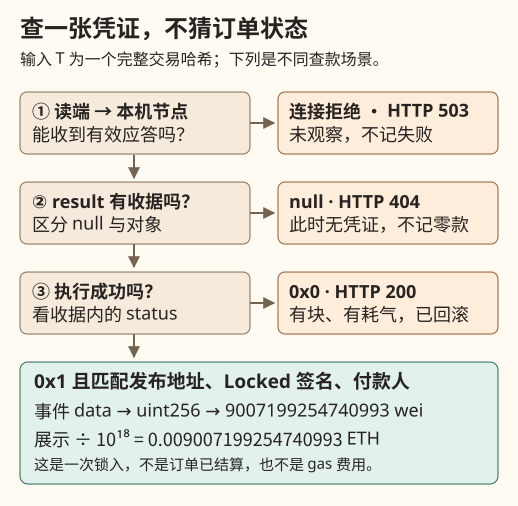

先修：12 · 回执与块锚点、13 · ABI 字节、14 · 托管状态机、16 · 部署清单。用同一份合约，不新造事件。本课不用数据库、浏览器钱包或任何密钥；写入只发生在你自己启动的临时 Anvil 上，Java 服务只读。
给客服的接口，不能是一层透明代理
约定 GET /receipts/{hash}。哈希是 0x 加 64 个十六进制字符（32 字节），不是订单号。请求者既不能传节点 URL，也不能自选 RPC 方法或合约地址。受信的第 16 课清单给出链号、部署块指纹、合约和付款人；小服务每次先核对链号和部署块哈希，再读指定交易。返回的是此刻节点上的执行事实，不是放货决定。 并行链查询没有数据库事务的快照保证；因此连成功答复也带块哈希，不缓存为永远有效的支付结果。
| 服务答复 | 读到了什么 | 可以怎样行动 |
|---|---|---|
200 EXECUTED |
回执 status=0x1。只有本部署的 Locked 日志匹配，才附 lockedWei |
可核对锁款金额；没有该字段表示这不是锁款凭证，不能补成 0 |
200 REVERTED |
找到了块、交易和 status=0x0 回执，执行未正常完成 |
保存失败凭证；交易仍花 gas。不要因为 HTTP 200 就登记付款，也不要根据状态位猜具体异常 |
404 NO_RECEIPT |
节点正常回答了 result: null |
仅表示现在没有收据；可能未打包，也可能此节点根本不知道这笔交易。别承诺一定还在排队 |
502 RPC_ERROR / 503 RPC_UNAVAILABLE / 504 RPC_TIMEOUT |
节点返回 JSON-RPC error，或连不上，或等不及 |
无法判断交易；记录方法、请求 ID 或故障时间，别把异常转换成 Optional.empty() |
429 RATE_LIMITED |
本服务的读取配额用完，请求还没发给节点 | 依 Retry-After 放慢；它不证明节点拥堵。节点自身返回 HTTP 429 则是 503 RPC_THROTTLED |


从真实部署拿输入，不把示例哈希当凭证
从仓库根目录使用 Bash。环境：JDK 21、PATH 中的 Maven 3.9.x、Python 3.11、curl、lsof，以及第 13 课安装的 Foundry 1.7.1 和 solc 0.8.28。共享 Maven 工程固定 web3j 4.12.3；首次编译需联网下载依赖，缓存齐备后可 bash labs/m05/build.sh -o。编译时联网与查链时联网不同：两个实验端口都只绑定回环。确保 18556 和 18117 空闲，有冲突就停，不要改指别人的服务。
终端 A 新开一条内存链。--settle-wei 会在本次部署后实发 lock 和 settle，不提现。保留本轮打印的 ARCHIVE 绝对路径；看到 HANDOFF ... state=2 和等待提示后，暂时别按回车。
export PATH="${XDG_CACHE_HOME:-$HOME/.cache}/chain-course/m04/bin:$PATH"
export FOUNDRY_SOLC="${XDG_CACHE_HOME:-$HOME/.cache}/chain-course/m04/bin/solc"
unset ANVIL
WORK=$(mktemp -d)
python3 labs/m04/deployment.py --out "$WORK/release" --hold --settle-wei 9007199254740993
终端 B 也在根目录。清单是受信发布方交来的原件；归档里的 receipts.json 用来定位交易，接下来读的是活节点，不是用归档冒充在线回答。
printf '粘贴终端 A 打印的 ARCHIVE 绝对路径：'; IFS= read -r R
WORK=$(dirname "$R")
export M05_MANIFEST="$R/manifest.json"
bash labs/m05/build.sh
LOCK=$(python3 -c 'import json,sys; print(json.load(open(sys.argv[1]))["lock"]["transactionHash"])' "$R/receipts.json")
SETTLE=$(python3 -c 'import json,sys; print(json.load(open(sys.argv[1]))["settle"]["transactionHash"])' "$R/receipts.json")
bash labs/m05/run.sh ReceiptApi raw "$LOCK" > "$WORK/lock-wire.json"
python3 -m json.tool "$WORK/lock-wire.json"
第一次读：保留 JSON-RPC 的信封
打开完整 Java 源码，先读 rpc()，暂时不看 HTTP 路由。JDK HttpClient 向 http://127.0.0.1:18556 发 HTTP POST，请求体是 {"jsonrpc":"2.0","id":1,"method":"eth_getTransactionReceipt","params":[T]}，其中 T 表示带引号的实际哈希。这个 POST 是 RPC 传输方式，里面的方法是读；外层客服接口才是 GET。raw 模式打印节点应答的完整 JSON 字段，不把 web3j 类型转回 JSON 来充当原件。
对照三处：id 应与本次请求相同，它不等于交易哈希；result.transactionHash 应等于 $LOCK；result.status 应为 0x1，blockNumber 为 0x2。JSON-RPC 层 error 与 result 互斥，HTTP 200 并不替它检查。再看 logs：本例一个元素，address 是清单中托管地址，topics[0] 是 Locked(address,uint256) 的签名哈希，topics[1] 是左侧补零的付款地址。data 是完整的 32 字节字，去掉左侧填充后的金额是 0x20000000000001。注意 gasUsed 的单位是 gas，不是 wei；交易的 value 也不是回执字段，不能去回执顶层找它。
第二次读：把同一个回执变成有单位的 Java 值
在终端 B 启动服务。run.sh 最终 exec java，所以 $! 是稍后要停的那个进程。看到 GET http://127.0.0.1:18117/receipts/{hash} 再执行下一段；若报地址占用，不要向该端口发请求。
bash labs/m05/run.sh ReceiptApi &
API_PID=$!
BASE=http://127.0.0.1:18117/receipts
curl --noproxy '*' -fsS "$BASE/$LOCK" > "$WORK/lock-view.json"
python3 -m json.tool "$WORK/lock-view.json"
python3 - "$WORK/lock-wire.json" "$WORK/lock-view.json" <<'PY'
import json, sys
wire, view = (json.load(open(p)) for p in sys.argv[1:])
r = wire['result']; log, = r['logs']
assert r['transactionHash'] == view['transactionHash'] and r['blockHash'] == view['blockHash']
assert r['status'] == view['status'] == '0x1' and int(r['blockNumber'], 16) == int(view['blockNumber']) == 2
assert int(log['data'], 16) == int(view['lockedWei']) == 9007199254740993
assert view['lockedEth'] == '0.009007199254740993'
print('same receipt:', view['blockHash'], 'lockedWei:', view['lockedWei'])
PY
curl --noproxy '*' -sS "$BASE/$SETTLE"; printf '\n'
最后一行应同样是 EXECUTED，但属于块 3，没有 lockedWei。结算只是把已经锁入的款项登记为可领，不是又一次锁入。对同一个哈希重复 GET 也不应累加款项：这个接口根本不写业务表。
lookup() 的顺序值得照着数据读一遍：
- 先检查 JSON-RPC 是否成功，再让
result.isNull()单独走NO_RECEIPT；只把真实对象交给 web3j 的TransactionReceipt。getBlockNumber()、getGasUsed()已从十六进制 quantity 变成BigInteger，getStatus()则保留字符串。对本卷 Cancun 链明确只接受0x0和0x1，不把缺字段当成功。 new TypeReference<Address>(true) {}标出 indexed 参数在 topic 里；Uint256未 indexed，在 data 里。EventEncoder.encode(LOCKED)算出 topic 0；这里只对指定发布地址、签名及付款人相符的一条锁款事件执行FunctionReturnDecoder.decode(...)，不全链搜同名事件。合约直接部署、单笔锁定，因而不会返回两条可相加的Locked。换 ABI 或换部署要重新核发布凭据，不能凭字段碰巧长成 32 字节沿用这个解释。- 解出的
Uint256.getValue()是BigInteger wei。先用最小单位算，再展示：new BigDecimal(wei, 18).toPlainString()只是给整数加 18 位小数刻度，不做浮点除法。2⁵³+1落在相邻两个可表示的 binary64 整数之间，转double会变成2⁵³。因此 JSON 输出"lockedWei":"9007199254740993"，而非要求浏览器用Number接住不安全的大整数。记录资金事实时保存 wei，不保存这个展示用 ETH 字符串。
数据库边界也要对称：Solidity uint256 的最大值是 2²⁵⁶−1（78 位十进制），不适合 BIGINT 的有符号 64 位上限。下一课表列用 PostgreSQL NUMERIC(78,0)；落库之前已是合法无符号整数，用 JDBC setBigDecimal(i, new BigDecimal(wei))，取回 getBigDecimal("amount_wei").toBigIntegerExact()。这个列型能容纳所有 uint256，但它本身不等于 uint256 范围校验，也不替你拒绝入参小数。来自文本的 wei 要先按约定的整数字串解析、校验范围；别依赖列的 scale 自动舍入。本课接口不连库也不拿数据库补回执。
给读端三种相似的报障，让它给出不同证据
先保持节点和服务都运行。下面的全零哈希只是查找对照，不代表提交过交易。紧接着从单次提交脚本取得另一笔真实哈希：脚本复用第 16 课验清单、状态和付款人，只在自己的 Settled 实例上再调一次 settle()（携带 0 wei）。显式给 gas 上限，临时关自动挖块、先入池再挖一块，最后恢复自动挖块；否则预估 gas 就可能拒绝，根本没有失败回执。这段写端是演练夹具，不是 Java API 的路由。使用单独实验链，期间别运行其他课程写端。
ABSENT=$(printf '0x%064d' 0)
curl --noproxy '*' -sS -D "$WORK/absent.headers" -o "$WORK/absent.json" "$BASE/$ABSENT"
cat "$WORK/absent.headers" "$WORK/absent.json"; printf '\n'
BAD=$(python3 labs/m05/reverted_receipt.py) && printf 'failed tx=%s\n' "$BAD"
curl --noproxy '*' -sS -D "$WORK/revert.headers" -o "$WORK/revert.json" "$BASE/$BAD"
cat "$WORK/revert.headers" "$WORK/revert.json"; printf '\n'
预期：第一张是 404 / NO_RECEIPT；第二张是 200 / REVERTED，带 $BAD、真实块哈希、status=0x0 和非零 gasUsed，没有锁款金额。这份源码先检查 state != Locked，所以在本次已结算实例上第二次结算会失败；不能只凭 status 位给任意陌生交易还原原因。若看到的是 400 BAD_REQUEST，检查是否把空字符串或短哈希当成 $BAD；格式错误没有查询过链，不是实验通过。
再观察一种有应答的下游错误。直接询问自己的 18556，故意把回执方法的参数列表留空。它仍是只读方法，不用提交交易：
curl --noproxy '*' -sS -D "$WORK/rpc-error.headers" -o "$WORK/rpc-error.json" \
-H 'Content-Type: application/json' \
--data '{"jsonrpc":"2.0","id":17,"method":"eth_getTransactionReceipt","params":[]}' \
http://127.0.0.1:18556
cat "$WORK/rpc-error.headers" "$WORK/rpc-error.json"; printf '\n'
找 id: 17 和 error.code，而不是 result:null。这是绕开适配层、直接了解节点协议的对照；对外 GET 会先挡住坏参数，不能把它说成服务端收到了同一张错误回执。rpc() 遇这样的信封会记录 RPC 错误码，向业务侧返回 502 RPC_ERROR，不解析收据。
最后回终端 A 按回车关闭节点，不要关闭 Java 服务。回到终端 B，再用原先确定成功的 $LOCK：
sleep 1
curl --noproxy '*' -sS -D "$WORK/down.headers" -o "$WORK/down.json" "$BASE/$LOCK"
cat "$WORK/down.headers" "$WORK/down.json"; printf '\n'
kill "$API_PID"; wait "$API_PID" || :
此时应收到 503 / RPC_UNAVAILABLE，不是 404，更不是 REVERTED；这是 Java 服务对下游断线的回答。如果 curl 自己报连不上 18117，说明被停的是读端，没有测到该分支。归档和 $WORK 中的凭证仍可复核，不能据此声称临时链还在线。
读请求可以重试，读数不保证永远一样
rpc() 复用一个直连回环的 HttpClient，建连最多 1 秒；从发出单个 sendAsync 到收到完整响应体最多等 2 秒，超时取消这次等待。正常的一次 GET 顺序读链号、部署块、回执三次，下游等待预算相加约 6 秒，不是整个 GET 只有 2 秒。这一层不自动重试，避免 HTTP 客户端、网关、业务层各试三次，放大对同一节点的压力。本机服务每个一秒窗口最多放行 8 个合法 GET，超出回 429 并带 Retry-After: 1；这是单实例入口配额，不是全局精确 QPS。
如果由上层排任务，可以给同一哈希最多两次额外只读尝试，遇临时断连/超时则按 1 秒、2 秒加少量随机抖动退避，并设总截止时间；遇 429 尊重 Retry-After。result:null 若属于刚提交的已知交易，安排稍后重新观察原哈希；格式错、错链或不兼容 ABI 要修配置，失败回执要保存，不进入这种重试。GET 的幂等指不改链上/业务状态，不保证下一次查到相同块或相同结果。不把只读策略套在发送交易上：提交响应丢失不能证明交易没进池。
查单笔只需要一个哈希；若需求改成「从块 10 到块 210 找全部锁款」，别给每笔或每块触发一轮 HTTP 扇出。按地址与 topic 分段调用 eth_getLogs：如闭区间 [10,109]、[110,209]、[210,210]。超出节点范围/结果限制就缩小同一段，只有这段完整取回并持久化才推进；失败不能当成空段跳过。如何把分段与块游标绑在一起，是第 18 课的职责。
独立作业：能否凭一张结算凭证补写锁款？
另开一个全新 WORK，让终端 A 改用 --settle-wei 9007199254740995；终端 B 从新 ARCHIVE 取清单与哈希，重新启动读端，别让原先的断线服务复用旧清单。先写预测，再查这次的 lock、settle 和本次部署交易三笔。用本轮的 lock-wire.json 与 lock-view.json 独立复算（把前面断言中的金额和 ETH 展示值一并换为你的预测值）；用原始回执和读端答复组成三行表，列：transactionHash / blockHash / status / 有无 lockedWei / 可回答的业务问题。保留一次对错误短哈希的 curl -i "$BASE/0x12" 结果，结束后同样关闭两个进程。
过关判据： 部署在块 1，没有 lockedWei；块 2 锁入 9007199254740995 wei = 0.009007199254740995 ETH；块 3 结算成功却不能再记一笔锁款。三笔都能给出本轮不同的交易哈希和独立的块位置。短哈希返回 400，不是「没付」。能用 R-17 的线索解释少掉 1 wei 是哪种类型转换可能造成的，并用你自己的整数复算结果排除「少付」；不能仅凭这三次 HTTP 200 推断已提现、已最终化或可以交货。